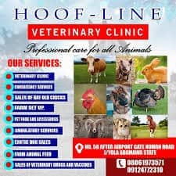

رعاية متخصصة للماشية والحيوانات الزراعية
عناية الحافر البيطرية هي عيادة متخصصة في يولا، تركز بشكل أساسي على صحة ورفاهية الماشية والحيوانات الكبيرة في المزارع. نقدم خدمات بيطرية شاملة للمزارعين والرعاة والمشغلين التجاريين للماشية. فريقنا من الخبراء يمتلك خبرة عالية في التعامل مع التحديات الصحية الفريدة التي تواجه الأبقار والماعز والأغنام وغيرها من الحيوانات الكبيرة. نحن ملتزمون بدعم المجتمع الزراعي من خلال ضمان صحة وإنتاجية مواشيهم.